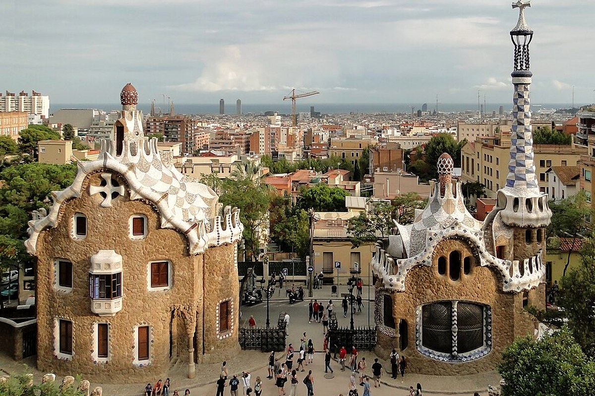

사그라다와 파크 구엘은 성격이 달라 같은 날 보아도 중복이 아니다.




사그라다 · 산 파우 · 파크 구엘
후회 없는 여행을 기준으로 가이드·커플·현지인의 관점을 합의한 일정.
예상 도보93분
대중교통52분
택시·차량0분
일정 지점9곳
반드시 참고: Sagrada Família와 Park Güell 공식 시간 지정 티켓을 사전 확보.
오전의 스테인드글라스와 저녁의 모자이크 전망이 다른 사진을 만든다.
Bunkers까지 추가하면 8월 더위에 피로가 과해진다.
숙소 출발
예약 전 여유 있게 출발
왜 중요한가숙소 출발은(는) 오늘의 흐름에서 다음 장면으로 자연스럽게 이어지는 핵심 지점이다.
볼 포인트예약 전 여유 있게 출발. 대표 풍경과 공간의 분위기에 집중한다.
실전 팁혼잡하면 핵심을 보고 이동하고, 예약 장소는 15분 일찍 도착한다.
시간 관리표시된 이동시간에 환승·대기 10분을 더한다.
MetroUrgell Metro Barcelona → Sagrada Familia Barcelona22분 · 경로 ↗
Sagrada Família
탄생 파사드·내부·박물관
왜 중요한가Sagrada Família은(는) 오늘의 흐름에서 다음 장면으로 자연스럽게 이어지는 핵심 지점이다.
볼 포인트탄생 파사드·내부·박물관. 대표 풍경과 공간의 분위기에 집중한다.
실전 팁혼잡하면 핵심을 보고 이동하고, 예약 장소는 15분 일찍 도착한다.
시간 관리표시된 이동시간에 환승·대기 10분을 더한다.
도보Sagrada Familia Barcelona → Avinguda de Gaudi Barcelona10분 · 경로 ↗
Avinguda de Gaudí
산 파우까지 보행축
왜 중요한가Avinguda de Gaudí은(는) 오늘의 흐름에서 다음 장면으로 자연스럽게 이어지는 핵심 지점이다.
볼 포인트산 파우까지 보행축. 대표 풍경과 공간의 분위기에 집중한다.
실전 팁혼잡하면 핵심을 보고 이동하고, 예약 장소는 15분 일찍 도착한다.
시간 관리표시된 이동시간에 환승·대기 10분을 더한다.
도보Avinguda de Gaudi Barcelona → Hospital de Sant Pau Barcelona8분 · 경로 ↗
Sant Pau
외관 또는 짧은 내부
왜 중요한가Sant Pau은(는) 오늘의 흐름에서 다음 장면으로 자연스럽게 이어지는 핵심 지점이다.
볼 포인트외관 또는 짧은 내부. 대표 풍경과 공간의 분위기에 집중한다.
실전 팁혼잡하면 핵심을 보고 이동하고, 예약 장소는 15분 일찍 도착한다.
시간 관리표시된 이동시간에 환승·대기 10분을 더한다.
도보Hospital de Sant Pau Barcelona → Hospital de Sant Pau Restaurants8분 · 경로 ↗
점심
산 파우 인근 식사
왜 중요한가점심은(는) 오늘의 흐름에서 다음 장면으로 자연스럽게 이어지는 핵심 지점이다.
볼 포인트산 파우 인근 식사. 대표 풍경과 공간의 분위기에 집중한다.
실전 팁혼잡하면 핵심을 보고 이동하고, 예약 장소는 15분 일찍 도착한다.
시간 관리표시된 이동시간에 환승·대기 10분을 더한다.
MetroHospital de Sant Pau Barcelona → Urgell Metro Barcelona25분 · 경로 ↗
숙소 휴식
더운 시간 회복
왜 중요한가숙소 휴식은(는) 오늘의 흐름에서 다음 장면으로 자연스럽게 이어지는 핵심 지점이다.
볼 포인트더운 시간 회복. 대표 풍경과 공간의 분위기에 집중한다.
실전 팁혼잡하면 핵심을 보고 이동하고, 예약 장소는 15분 일찍 도착한다.
시간 관리표시된 이동시간에 환승·대기 10분을 더한다.
Metro+버스Urgell Metro Barcelona → Park Guell Barcelona38분 · 경로 ↗
Park Güell
도마뱀·기둥홀·물결 벤치
왜 중요한가Park Güell은(는) 오늘의 흐름에서 다음 장면으로 자연스럽게 이어지는 핵심 지점이다.
볼 포인트도마뱀·기둥홀·물결 벤치. 대표 풍경과 공간의 분위기에 집중한다.
실전 팁혼잡하면 핵심을 보고 이동하고, 예약 장소는 15분 일찍 도착한다.
시간 관리표시된 이동시간에 환승·대기 10분을 더한다.
도보Park Guell Barcelona → Gracia Barcelona Restaurants25분 · 경로 ↗
Gràcia 저녁
공원에서 내려와 저녁
왜 중요한가Gràcia 저녁은(는) 오늘의 흐름에서 다음 장면으로 자연스럽게 이어지는 핵심 지점이다.
볼 포인트공원에서 내려와 저녁. 대표 풍경과 공간의 분위기에 집중한다.
실전 팁혼잡하면 핵심을 보고 이동하고, 예약 장소는 15분 일찍 도착한다.
시간 관리표시된 이동시간에 환승·대기 10분을 더한다.
MetroGracia Barcelona Restaurants → Urgell Metro Barcelona20분 · 경로 ↗
숙소 복귀
일정 종료
왜 중요한가숙소 복귀은(는) 오늘의 흐름에서 다음 장면으로 자연스럽게 이어지는 핵심 지점이다.
볼 포인트일정 종료. 대표 풍경과 공간의 분위기에 집중한다.
실전 팁혼잡하면 핵심을 보고 이동하고, 예약 장소는 15분 일찍 도착한다.
시간 관리표시된 이동시간에 환승·대기 10분을 더한다.
오늘의 후회 방지 가이드
사그라다에서는 숲 같은 기둥과 동서 스테인드글라스의 색 차이를 본다. 파크 구엘은 도마뱀뿐 아니라 히포스타일 홀과 자연광장, 세탁부의 회랑까지 본다.